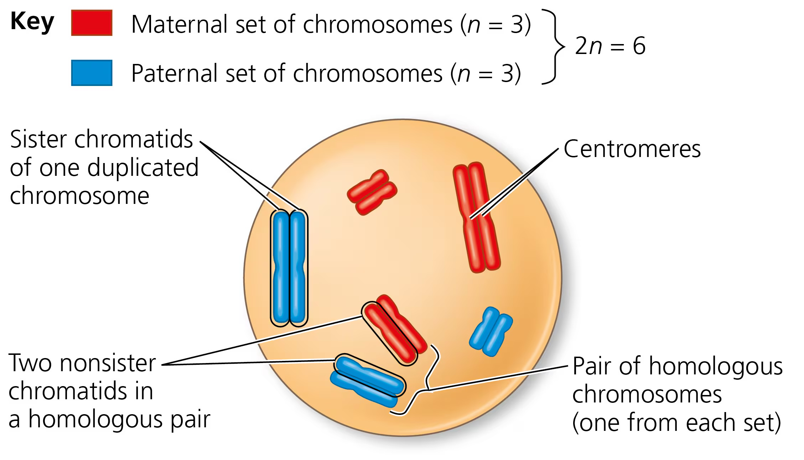
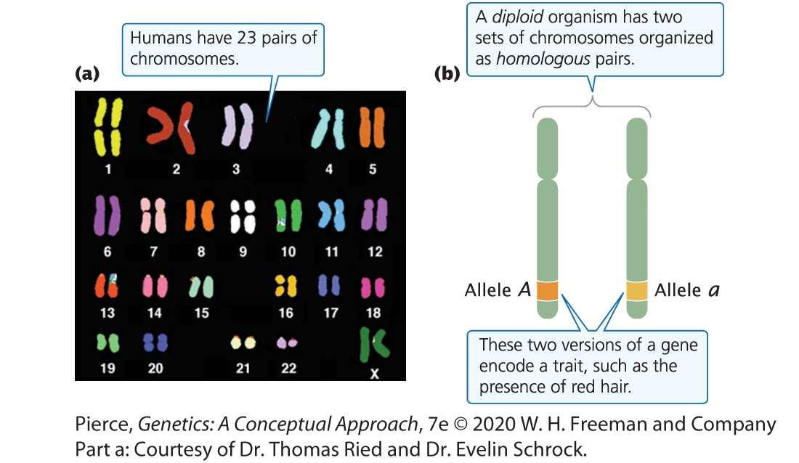
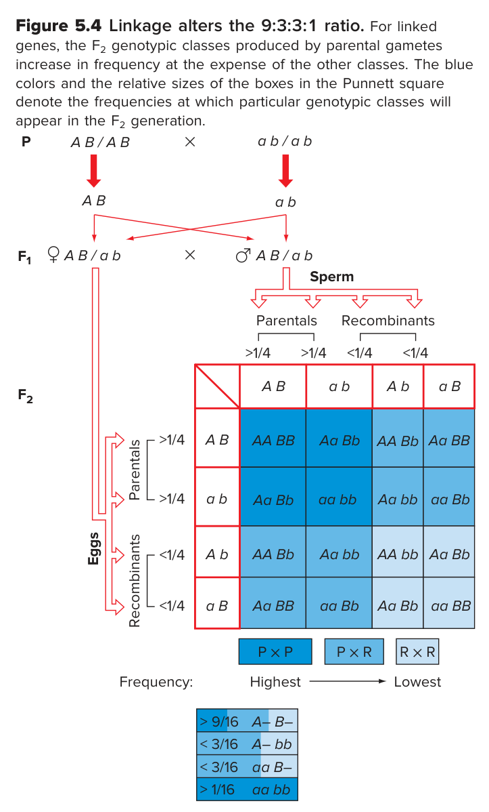
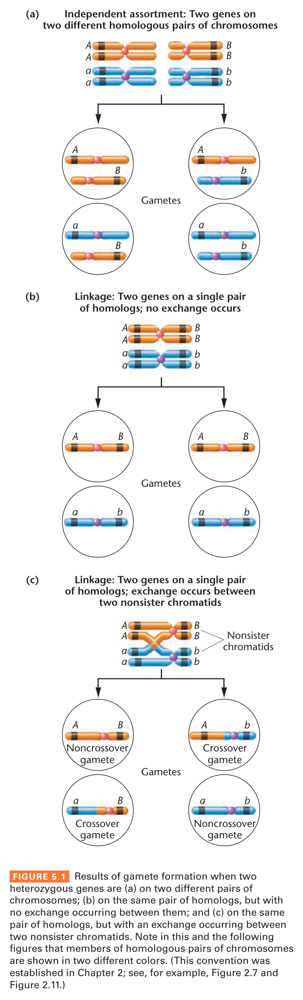
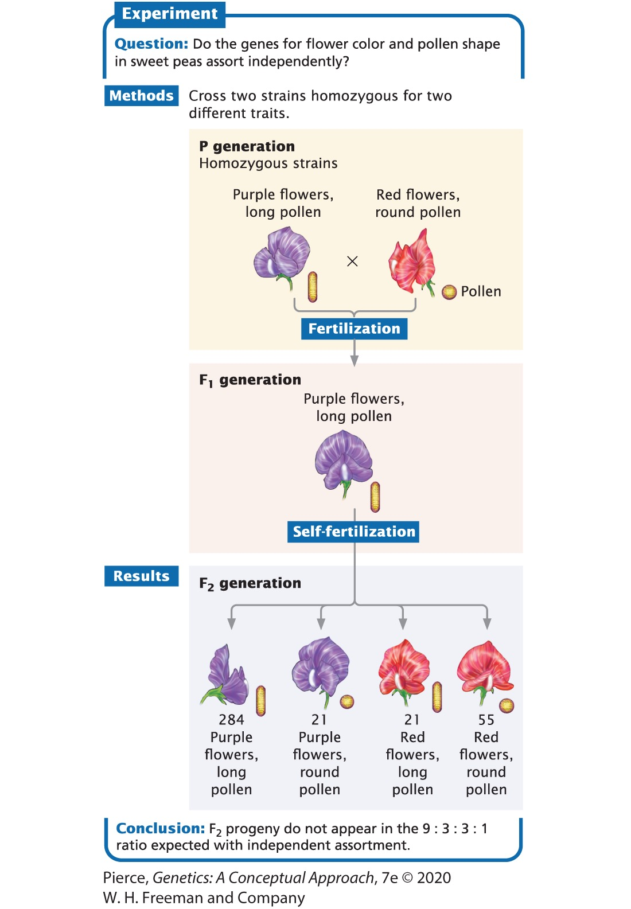
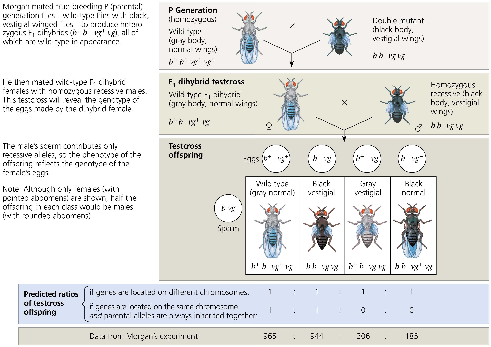

同源染色體 vs. 雙套（2n），與 AaBb × AaBb 自交如何判斷互換？
直擊高中遺傳學最常混為一談的兩大教學關卡：怎麼把「同源染色體」和「雙套」切乾淨？如果不做試交、直接看 AaBb × AaBb 子代，又該如何確認有沒有發生互換？
「同源染色體」看的是單一對父源與母源染色體的對應關係，「雙套（2n）」看的是整個細胞擁有的染色體套數（即使複製後出現姊妹染色分體仍維持 2n）；而在 AaBb × AaBb 交配中，先以比例顯著偏離 9 : 3 : 3 : 1 確認兩基因連鎖，再依親代連鎖相位檢驗是否出現「完全連鎖時絕不可能出現的重組後代表現型」（順式看 A_bb 與 aaB_，反式看雙隱性 aabb），即可判定是否發生互換。
延伸對照：114 羅東高中簡答 1(1) 名詞階層見 遺傳學核心名詞階層與教學串連；人類 X、Y 染色體局部同源特例見 人類 XY 染色體聯會、互換與四分體判定。
01 如何分辨「同源染色體」與「雙套（2n）」？（問 1(2)）
學生之所以容易把兩個詞混為一談，是因為在正常人類體細胞（2n ＝ 46）裡，「雙套」剛好代表「每一號染色體都有成對的同源染色體」。向學生解釋時，最有效的方法是直接切開觀察尺度：
| 比較面向 | 同源染色體（homologous chromosomes） | 雙套／二倍體（diploid, 2n） |
|---|---|---|
| 觀察尺度 | 局部（單一對染色體之間的關係） | 整體（整個細胞的染色體套數／倍性） |
| 核心定義 | 一父一母、長度、中節位置與帶紋相同，在相同基因座攜帶控制同一性狀基因的一對染色體（等位基因版本可能不同）。 | 細胞內具備兩組完整的染色體（父源 1 套 n ＋ 母源 1 套 n），也就是每一類染色體皆成對存在。 |
| 人類實例 | 第 1 號父源染色體與第 1 號母源染色體合稱「一對同源染色體」。 | 體細胞內全部 46 條染色體（23 對）合稱「雙套／二倍體細胞（2n ＝ 46）」。 |
| 配子與異常倍數體 | 配子（n）內沒有同源染色體配對；三體性（2n＋1）或四倍體（4n）中同一號染色體可有 3 條或 4 條彼此同源。 | 配子為單套（n）；三體性、四倍體（4n）則不再屬於單純雙套（2n）。 |
- 迷思 1：「DNA 複製後，染色體變成 X 形，細胞就從 2n 變成 4n 了？」
錯。S 期複製後每條染色體含有兩條由中節相連的姊妹染色分體，DNA 總量加倍，但細胞依然是雙套（2n）。Campbell 13e Ch13 明確提醒：無論染色分體有幾條，細胞都只有「母源 1 組＋父源 1 組」共兩組遺傳資訊，姊妹染色分體只是同一組資訊的副本。 - 迷思 2：「同源染色體跟姊妹染色分體是一樣的嗎？」
不同。姊妹染色分體是同一條染色體複製出來的完全相同副本；同源染色體則是分別來自父方與母方的兩條對應染色體，攜帶相同基因座但等位基因可能不同（例如一條帶正常血紅素 β 鏈基因，另一條帶鐮刀型突變等位基因；Solomon 11e Ch10）。
02 親代 AaBb × AaBb 如何知道子代有沒有發生互換？（問 1(3)）
先立前提：兩對基因分別控制兩組完全顯隱性性狀、彼此無上位交互作用，且子代樣本數足夠大。只有當兩基因位於同一對同源染色體上（連鎖，linkage）時，才討論減數分裂前期 I 非姊妹染色分體之間的互換（crossing over）。
若 A/a 與 B/b 位於不同對染色體（獨立分配），雙親各等量產生 AB、Ab、aB、ab 四種配子（各 1/4），子代四種表現型預期比例必為 9 (A_B_) : 3 (A_bb) : 3 (aaB_) : 1 (aabb)。若實際觀察比例顯著偏離 9 : 3 : 3 : 1（可以卡方檢定 χ² 檢驗，如 1905 年 Bateson、Saunders 與 Punnett 的甜豌豆實驗），代表親本型配子頻率 > 1/4、重組型配子 < 1/4，兩基因具有連鎖關係。
連鎖的 AaBb 親代有順式／偶聯（AB/ab）與反式／相斥（Ab/aB）兩種相位。若完全不發生互換，雙親只會形成 2 種親本配子，導致子代特定表現型完全缺席；一旦發生互換，就會形成重組配子，補出原本絕不可能出現的表現型類別：
| 親代連鎖相位 | 若「完全無互換」的子代表現型 | 若「有發生互換」的判定依據 |
|---|---|---|
順式／偶聯相位AB/ab × AB/ab |
僅產 AB、ab 配子 → 子代只有 2 種表現型：3 (A_B_) : 1 (aabb)，絕不出現 A_bb 與 aaB_。 |
子代出現 A_bb 與 aaB_（4 種表現型皆出現），且比例顯著偏離 9:3:3:1：A_B_ > 9/16、aabb > 1/16，而 A_bb、aaB_ 皆 < 3/16。 |
反式／相斥相位Ab/aB × Ab/aB |
僅產 Ab、aB 配子 → 子代只有 3 種表現型：1 (A_bb) : 2 (A_B_) : 1 (aaB_)，絕不出現雙隱性 aabb。 |
子代出現雙隱性 aabb（4 種表現型皆出現），且比例顯著偏離 9:3:3:1：A_bb、aaB_ 皆 > 3/16，而 A_B_ < 9/16、aabb < 1/16。 |
一順一反AB/ab × Ab/aB |
順式產 AB、ab，反式產 Ab、aB → 子代只有 3 種表現型：2 (A_B_) : 1 (A_bb) : 1 (aaB_)，絕不出現 aabb。 |
子代出現雙隱性 aabb（4 種表現型皆出現），即代表反式親本必定經互換產生了 ab 配子（與順式親本的 ab 受精）。 |
- 從雙隱性
aabb比例反推重組率 r（設雙親皆有相同重組率 r，0 < r < 0.5）：反式相位下，雙親產出重組配子ab的機率各為 r/2，故aabb子代比例 ＝ (r/2)²；只要觀察到aabb出現即可證實互換並由r = 2 × √(aabb 比例)推估。順式相位下，雙親產出親本配子ab的機率各為 (1 − r)/2，故aabb＝ [(1 − r)/2]² > 1/16。 - 為何實務上仍改用試交（
AaBb × aabb）？在AaBb × AaBb自交中，雙顯性A_B_混雜了「親×親」「親×重」「重×重」三種受精來源，外觀相同卻難以反推個別親本的配子比例（Goldberg 7e Ch05）。改做AaBb × aabb試交後，雙隱性親本只提供ab配子、不遮蔽另一親本的等位基因，四種子代表現型比例便直接對應AaBb的配子比例：獨立分配為 1 : 1 : 1 : 1、完全連鎖為 1 : 1（僅 2 類）、連鎖且有互換則為 4 類皆有且親本型合計 > 50%、重組型合計 < 50%（Campbell 13e Ch15）。
若同一條染色體上的兩個基因相距甚遠，單次減數分裂中幾乎每次都會在其間發生至少一次互換，導致重組率逼近上限 50%。此時即使兩基因確實位於同一條染色體上，單看 AaBb × AaBb 子代比例也會接近 9 : 3 : 3 : 1，無法單靠此交配與自由配合區分，需透過中間標記基因的連鎖定位確認。
03 經典教科書原圖解析（點擊圖片可全螢幕放大）

🔍 點擊放大檢視細節
🔍 點擊放大檢視細節
🔍 點擊放大檢視細節AB/ab × AB/ab 的 F₂ 龐尼特方格：親本型配子（AB、ab）頻率大於 1/4、重組型（Ab、aB）小於 1/4，導致 16 格不再等機率——深藍（親×親）放大、淡藍（重×重）縮小，結果 A_B_ > 9/16、aabb > 1/16，而 A_bb 與 aaB_ 各小於 3/16。A_B_ 在自交中同時混進了深藍（親×親）、中藍（親×重）與淡藍（重×重），一眼看懂為什麼要讀準配子比例仍需改用試交。
🔍 點擊放大檢視細節
🔍 點擊放大檢視細節AaBb × AaBb 互換判讀時，順手舉 1905 年甜豌豆 F₂ 實例（4 類皆有但親本型顯著過多），說服力立刻加倍。
🔍 點擊放大檢視細節04 經典教科書原始文獻段落考證
以下英文原文與繁中譯文皆直接回溯自本機 Vault 正式譯本段落（皆已建立 #^anchor 區塊連結）。
VvBb 彼此交配，第二子代雖出現四種表現型，比例卻不符合獨立分配預期的 9 : 3 : 3 : 1，也不符合完全連鎖且無互換時的 3 : 1。自交結果先顯示兩個極端模型都不足以解釋資料，接著才以試交拆解第一子代所產的配子。〔教甄原題出處〕114 國立羅東高中第 1 次教師甄選初試（三、簡答題 第 1 題(2) 1 分、(3) 3 分）。
05 教甄簡答題滿分佈局與常見陷阱
- 陷阱 1：答 1(3) 時直接寫「做試交看是不是 1 : 1 : 1 : 1」
答非所問會被扣大分！題幹明確問的是「親代AaBb × AaBb交配後所產生的子代」怎麼判斷有無互換。必須正面比較「9:3:3:1（獨立分配）」、「順式 3:1／反式 1:2:1（完全連鎖無互換）」與「4 種表現型皆出現但顯著偏離 9:3:3:1（連鎖且有互換）」，最後再補充「實務上為精準算重組率會改採AaBb × aabb試交」。 - 陷阱 2：看到子代有 4 種表現型就立刻說「有發生互換」
錯！位於不同對染色體上的非連鎖基因也會產生 4 種表現型（9 : 3 : 3 : 1）。必須先以「顯著偏離 9 : 3 : 3 : 1」確立連鎖前提，再由新表現型出現確認互換。 - 陷阱 3：把「親本型」當成「雙顯性與雙隱性」的同義詞
錯！在反式相位（Ab/aB）下，單顯性Ab與aB才是親本型配子，雙顯性AB與雙隱性ab反而是重組型配子。
可搭配閱讀 《遺傳學核心名詞階層與教學串連》（補齊羅東高中問 1(1) 與成功高中非選 1），以及 《初級卵母細胞、間期與二分體》（複習 S 期複製後的 2n 與二分體／四分體計數）。